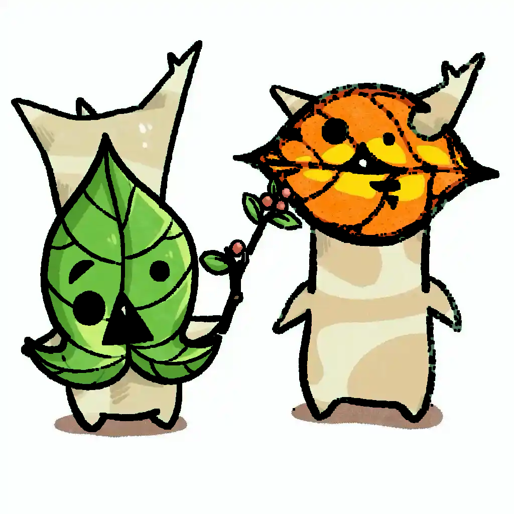
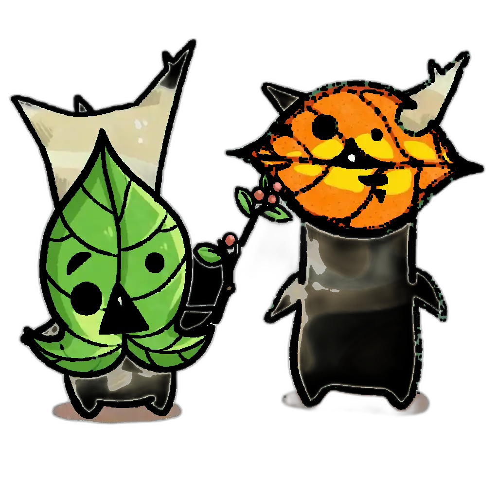
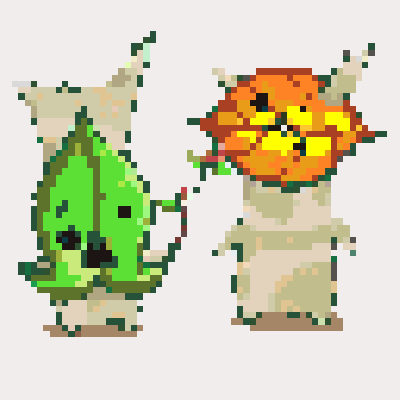
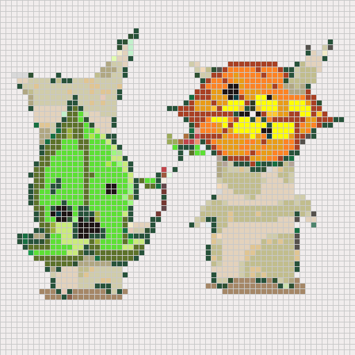
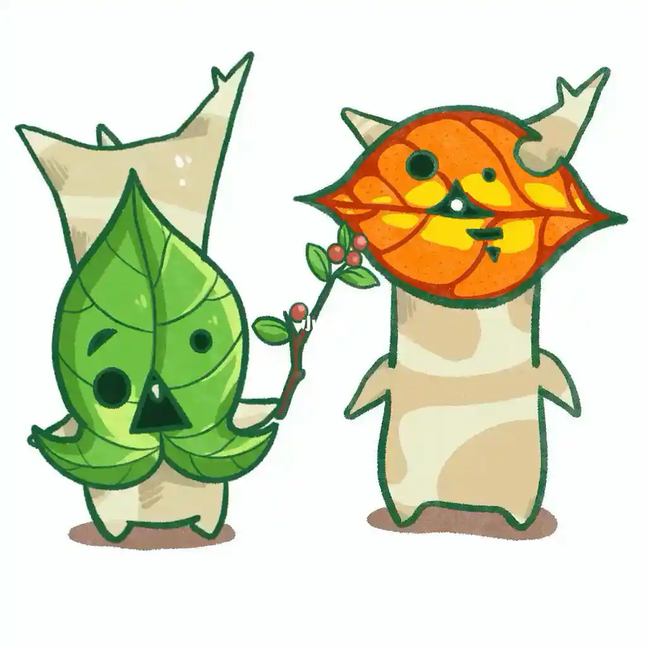
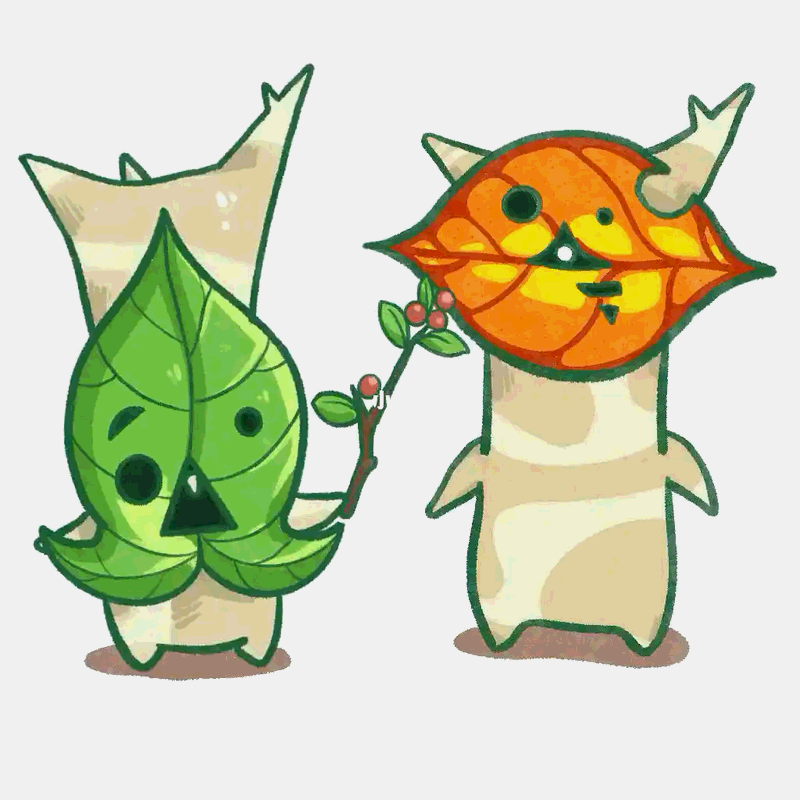
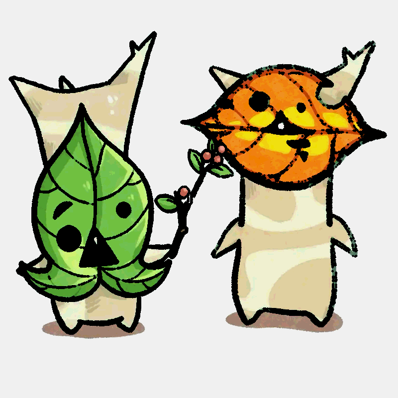
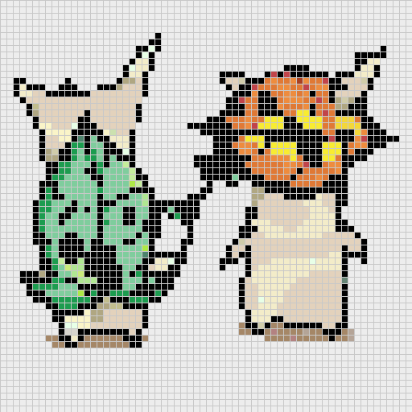
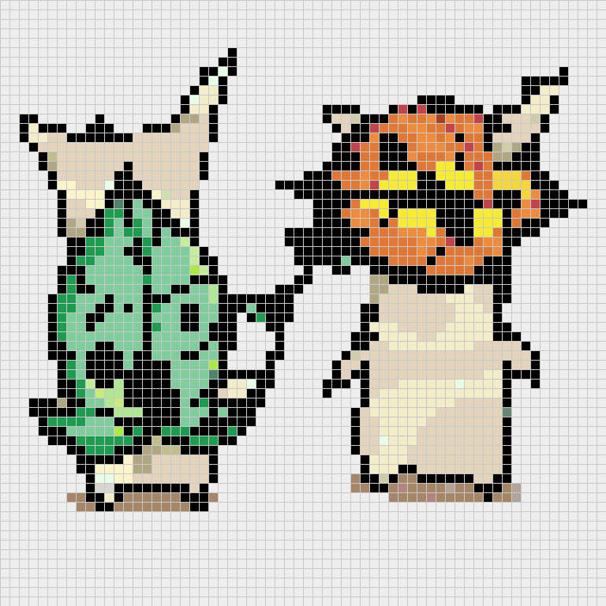

🖥️ 后端流程（Python）
1. original (converted to RGBA)
2. enhance_lines (strength=2)

3. remove_background (threshold=30)

4. dominant color extract + color match (full, unsimplified)

5. simplify_colors (level=30, then match)
6. final grid 64x64 (with grid lines)

🌐 前端流程（浏览器模拟）
1. 前端缩放至 800×800（LANCZOS，max 800px）

2. simplify_colors (level=30, 4-bit quantize)

3. enhance_lines (strength=2)

4. generate_grid (dominant color + OKLab match)
5. BFS merge (threshold=25)

6. 前端最终网格 64×64（bead_size=12）
